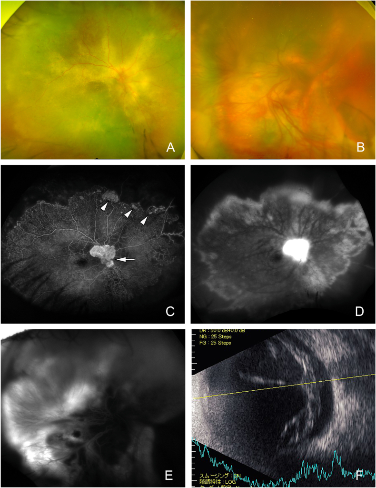

411 — Siêu âm nhãn cầu: bong võng mạc vs xuất huyết dịch kính / B-scan: RD vs VH
Tags: pattern:mang-dich-kinh vung:nhan-cau protocol:sieu-am
Mức chắc chắn (certainty): tổng hợp y văn (literature synthesis) — nhóm tự biên từ y văn mở, chưa gắn ca nguyên văn đơn lẻ.
1. Tổng quan — đầu dò 10 MHz + màng nào dính đâu
- Siêu âm B-scan 10 MHz qua mi nhắm (không đè khi nghi vỡ nhãn cầu). TẠI SAO phân biệt được: võng mạc dính ở đĩa thị + ora serrata (màng chữ V/Y); xuất huyết dịch kính không dính (chấm di động); hắc mạc dính ở lỗ thoát vortex + trước (vòm, không qua đĩa → chữ T).
- Aftermovement: bảo BN đảo mắt — màng võng mạc bong cứng, ít di động sau; máu dịch kính lắc lư nhiều (after movement +).
- Ngưỡng xử trí: bong võng mạc có hoàng điểm (macula-on) = mổ trong 24–48 giờ (mù hoàng điểm không hồi phục nếu để lâu); bong hắc mạc kèm T-sign sau chấn thương/mổ.
2. Gamut màng trong dịch kính
- Bong võng mạc do rách (rhegmatogenous): màng V/Y dính đĩa + ora, cứng, cận thị/chấn thương/mổ đục thủy tinh thể.
- Bong xuất tiết/co kéo (đái tháo đường, Coats): màng dày + xuất tiết, đái tháo đường lâu năm.
- Xuất huyết dịch kính: chấm/mây di động mạnh, đái tháo đường/tắc tĩnh mạch/chấn thương — không màng dính đĩa.
- Bong hắc mạc: vòm ngoại vi + T-sign (màng + dịch dưới hắc mạc), sau mổ/chấn thương/hạ nhãn áp.
3. Bảng so sánh
| Thực thể (entity) | B-scan điển hình | Chốt vào (rule-in) | Chốt loại (rule-out) | Gợi ý xác nhận |
|---|---|---|---|---|
| Bong võng mạc | Màng V/Y dính đĩa + ora, cứng, ít aftermovement | Dính đĩa thị + hoàng điểm on/off | Di động mạnh không dính → máu | Soi đáy rộng + mổ theo hoàng điểm |
| Xuất huyết dịch kính | Chấm/mây di động mạnh, không màng dính | Aftermovement (+) + tiền sử ĐTĐ/tắc TM | Màng V dính đĩa → bong võng mạc | Theo dõi tan (tuần-tháng) + tìm rách |
| Bong hắc mạc | Vòm ngoại vi + T-sign, không qua đĩa | T-sign sau mổ/chấn thương/hạ áp | Qua đĩa thị → võng mạc | Steroid/nghỉ + mổ khi kẹt (kissing) |
| Bong xuất tiết | Màng dày + dịch + xuất tiết (Coats/ĐTĐ) | Xuất tiết + đái tháo đường/Coats | Rách + di động → bong do rách | Điều trị nguyên nhân + laser/vitrektomy |

Toàn figure: đáy mắt (A–B) + FA (C–E) + B-scan panel F (góc dưới phải): võng mạc dày bong kèm xuất tiết. Nguồn: Kishi et al., Am J Ophthalmol Case Rep 2026, CC BY-NC-ND 4.0 (giữ nguyên bản).4. Protocol siêu âm
- Đầu dò 10 MHz, gel qua mi nhắm; cấm đè khi nghi vỡ nhãn cầu (khám CT trước).
- Quét 4 góc + hoàng điểm (macula on/off quyết định mổ cấp cứu) + đo aftermovement.
- Bong hắc mạc sau mổ: theo dõi T-sign + nhãn áp (hạ áp kéo dài → mổ).
5. Cạm bẫy
- Máu cũ đặc giả màng bong — tăng gain + đảo mắt (máu vẫn lắc).
- Bong võng mạc mạn màng dày cứng giả hắc mạc — tìm dính đĩa thị (võng mạc qua đĩa, hắc mạc không).
- Staphyloma cận thị nặng giả bong — so 2 mắt + đo trục nhãn cầu.
6. Tự lượng giá — Blind Quiz
Ca 1 — Nhìn panel F, mô tả màng trước khi mở đáp án.
- Hỏi: màng dày hay mỏng? Có dính đĩa không? Xuất tiết gợi nguyên nhân gì?
Bấm để hiện đáp án
- Bong võng mạc xuất tiết dày (Coats-like, đái tháo đường/BBS) — màng dày + xuất tiết, khác bong do rách (màng mỏng, rách) và máu (không màng).
- Nguồn: Kishi et al., Fig. 1F, CC BY-NC-ND 4.0.
Ca 2 — Chấm di động mạnh + không màng dính đĩa sau đái tháo đường 15 năm: chẩn đoán + theo dõi? (Bảng mục 3.)
Bấm để hiện đáp án
- Xuất huyết dịch kính: aftermovement (+) + không dính — theo dõi tan, soi tìm rách võng mạc khi máu tan.
Bài liên quan chéo
- 400 – Tổng quan Mắt
- 410 – Giải phẫu hốc mắt
- 412 – U trong nhãn cầu (đã có) (vôi hóa vs xuất huyết)
Không dùng để chẩn đoán độc lập khi chưa có người hướng dẫn.